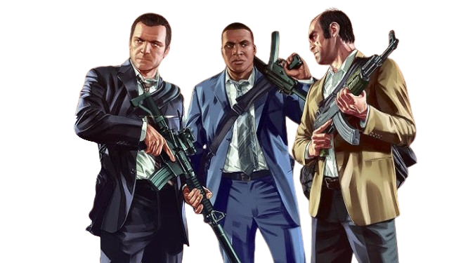

GTA 5
The story of Grand Theft Auto V (GTA V) is a testament to unparalleled ambition and unprecedented commercial success in the entertainment industry. Developed by Rockstar North and published by Rockstar Games, the title was officially announced in late 2011, sparking massive hype. As the highly anticipated successor to 2008's culturally significant Grand Theft Auto IV, Rockstar aimed to return to the fictional state of San Andreas, specifically focusing on Los Santos—a vibrant, sprawling satirical recreation of modern-day Los Angeles and its surrounding Southern California countryside. The development was a monumental undertaking involving over 1,000 developers across multiple Rockstar studios globally, boasting an estimated budget of $265 million, making it one of the most expensive video games ever produced at the time.
The core innovation of GTA V was its narrative structure. For the first time in the series, players would not control a single protagonist, but rather three distinct characters—Michael De Santa, Franklin Clinton, and Trevor Philips—whose lives and storylines seamlessly intertwined. This multi-protagonist system allowed players to instantly swap between characters, even mid-mission, offering dynamic new ways to experience the story and action. When the game finally launched in September 2013 for the PlayStation 3 and Xbox 360, it was met with widespread critical acclaim for its breathtaking open world, sharp satirical writing, and deep, engaging heist mechanics.
Commercially, GTA V shattered almost every record in the entertainment industry. It generated $800 million in its first 24 hours and surpassed $1 billion in just three days, making it the fastest-selling entertainment product in history. However, its initial launch was just the beginning. Rockstar Games aggressively supported the title across three entirely different generations of console hardware. In 2014 and 2015, the game was ported to the PS4, Xbox One, and PC, introducing drastically improved graphics and a brand-new first-person perspective that completely changed how players interacted with the world. Later, in 2022, it was remastered once again for the PS5 and Xbox Series X|S, cementing its longevity.
The true key to GTA V's enduring decade-long lifespan, however, was the launch of Grand Theft Auto Online shortly after the main game's release. What began as a somewhat rocky multiplayer add-on quickly evolved into a colossal, living live-service world. Rockstar consistently rolled out massive free updates adding new businesses, vehicles, and multi-part cooperative heists. This online component fundamentally changed Rockstar's business model, generating billions of dollars in recurring revenue through microtransactions.
Today, Grand Theft Auto V stands as a cultural monolith. It has sold over 195 million copies worldwide, securing its place as the second best-selling video game of all time (behind only Minecraft). It has transcended traditional gaming media, becoming a platform for massive roleplaying communities and content creators, and has left an indelible mark on pop culture as the defining open-world experience of the 21st century.
Grand Theft Auto V is a massive open-world action-adventure game. You play from either a third-person or first-person perspective, navigating the massive fictional state of San Andreas on foot or by vehicle. The single-player campaign is heavily narrative-driven but allows for total freedom to explore, cause chaos, and interact with the world at your own pace. Here is a detailed breakdown of how to navigate and master the criminal underworld of Los Santos.
The world of GTA V is roughly divided into two main areas: the bustling urban metropolis of Los Santos in the south, and the rural, mountainous desert region of Blaine County in the north. Understanding your heads-up display (HUD) is crucial for survival.
In the bottom-left corner of your screen is the minimap (radar). This map displays your current location, the direction you are facing, and nearby points of interest. Blips on the map represent missions, businesses, safehouses, and enemies. When you set a "Waypoint" using the main pause menu map, a purple GPS line will appear on your minimap, dynamically calculating the fastest legal driving route to your destination. Surrounding the minimap are three vital bars: Green (Health), Blue (Body Armor), and Yellow (Special Ability).
Unlike previous GTA games, you control three different characters. By holding down the character switch button (D-pad down on consoles, 'Alt' on PC), you can seamlessly transition between them when exploring the open world. Each character has their own bank account, safehouse, wardrobe, and distinct personality. Furthermore, each has a unique "Special Ability" that is activated by clicking both thumbsticks (or 'Caps Lock' on PC), which drains the yellow bar on your HUD:
Characters also have RPG-like stats (Stamina, Shooting, Strength, Stealth, Flying, Driving, and Lung Capacity). These improve naturally as you perform related actions. For example, sprinting frequently increases Stamina, while scoring headshots increases Shooting accuracy and reload speed.
Combat in GTA V heavily revolves around the cover system. Running out into the open will get you killed quickly. You must approach walls, cars, or barricades and press the cover button (R1/RB on consoles, 'Q' on PC) to snap to it. From cover, you can blind-fire or pop out to aim down your sights.
Weapons are accessed via the Weapon Wheel (holding L1/LB on consoles, 'Tab' on PC). The wheel is divided into categories: Melee, Handguns, Machine Guns, Assault Rifles, Sniper Rifles, Heavy Weapons (like RPGs), and Thrown Weapons (grenades). You can purchase weapons, ammo, and upgrades (suppressors, extended magazines, scopes) at Ammu-Nation stores scattered across the map.
If you take damage, your green health bar will deplete. Your health will slowly regenerate up to 50% if you take cover and avoid fire. To heal fully, you must find health packs scattered in the world, drink sodas from vending machines, or eat snacks. It is highly recommended to visit Ammu-Nation constantly to buy Body Armor (the blue bar), which acts as a second health bar that absorbs bullet damage before your actual health is affected.
Committing crimes (stealing cars, shooting pedestrians, trespassing in restricted areas like military bases) will attract the attention of the Los Santos Police Department (LSPD). Your "Wanted Level" is represented by one to five stars in the top right corner of the screen.
To lose your wanted level, you must first break the line of sight with pursuing officers. Your minimap will flash, and police cones of vision will appear. Hide in alleys, off-road areas, or train tunnels, and wait for the stars to stop flashing and disappear. Alternatively, you can drive into a "Los Santos Customs" mod shop without being seen to instantly respray your car and lose the cops.
As the name suggests, stealing cars is a core mechanic. You can hijack any vehicle on the road by pressing the interaction button next to it. If the car is parked, your character will smash the window and hotwire it.
Any stolen vehicle can be kept by driving it into the garage attached to your character's safehouse. You can also purchase luxury vehicles online using the in-game internet browser on your character's smartphone. To upgrade a vehicle, drive it into a Los Santos Customs shop. Here, you can change the paint job, add body kits, apply bulletproof tires, and upgrade the engine, brakes, and transmission to make the car faster and more durable.
To progress the story, travel to the large letter icons on your map (e.g., 'M' for Michael, 'F' for Franklin). "Strangers and Freaks" side missions are denoted by question marks ('?').
The centerpiece of GTA V's campaign is the Heist system. Throughout the story, you will plan and execute massive, multi-stage robberies. For each heist, you must make a crucial choice on the approach:
You must also hire a crew (a driver, a gunman, and a hacker). High-level crew members take a larger cut of the final payout but will perform flawlessly. Cheap crew members take a smaller cut, leaving more money for your protagonists, but they might crash the getaway car, drop the loot, or trigger alarms too early, complicating the mission.
Outside of heists, you can make money by investing in the in-game stock markets (LCN and BAWSAQ). A massive tip for beginners: Wait to complete Franklin's "Assassination" missions (given by Lester) until the very end of the game. These missions directly manipulate the stock market. By investing all three characters' millions into the correct stocks before completing the assassinations, you can manipulate the market to make billions of dollars.
While the single-player campaign of GTA V is a masterpiece, the game's true longevity comes from its multiplayer components and the incredibly active modding community. Here are the most popular alternative ways to experience Los Santos.